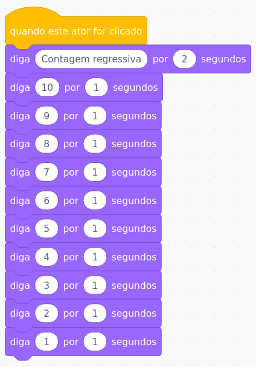
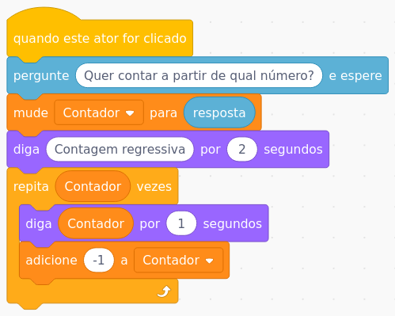

Opção de código para fazer contagem:
O problema da primeira opção é se tivermos que fazer uma contagem muito maior, por exemplo,
como podemos contar de 100 a 1?
Segunda opção de código para fazer contagem:
Agora uma opção para perguntar antes a partir de qual número fazer a contagem:
1) Agora vamos fazer a contagem na ordem correta (ou seja, sem ser regressiva): 1, 2, 3, 4, 5...;
2) Vamos fazer a contagem na ordem correta de 1 a 1000;
3) Agora veja se você consegue fazer a seguinte conta: somar todos os números de 1 a 1000;
Como fazemos isso? Vamos somando: 1+2+3+4+5...+1000
1+2=3 -> 3+3=6 -> 6+4=10 -> 10+5=15 -> 15+6=21 ... até somar 1000
Dica: para fazer isso, precisamos criar uma nova variável